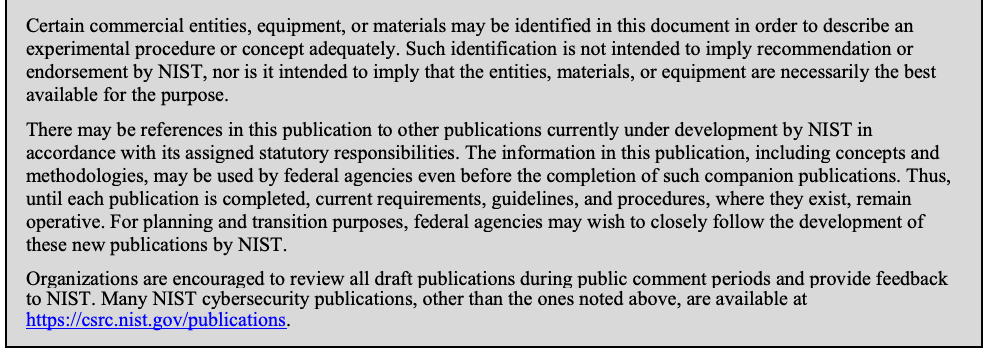
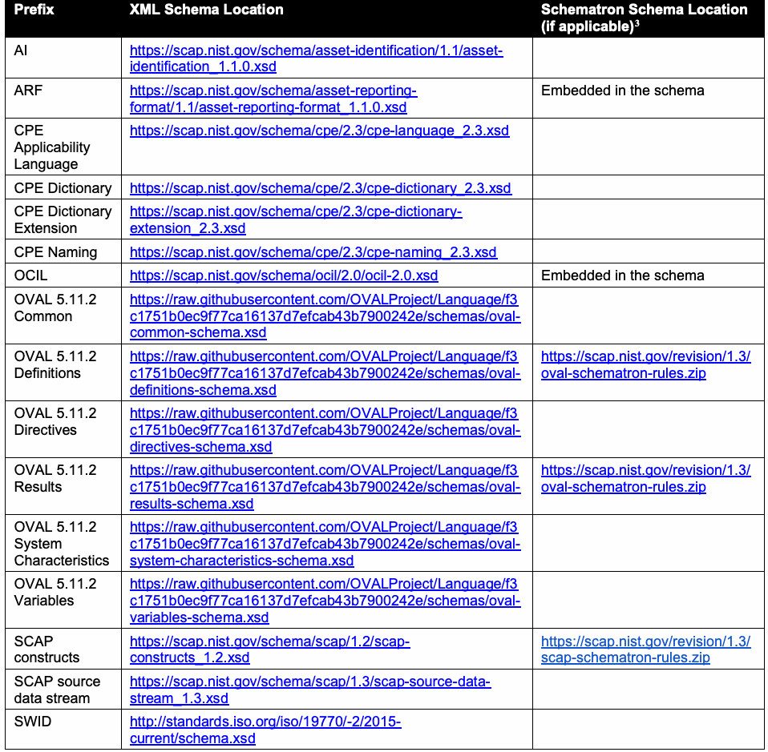
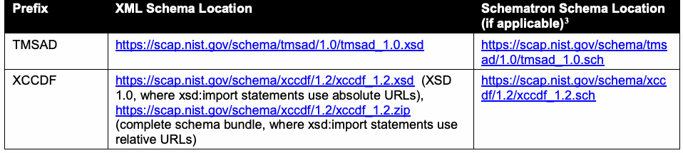
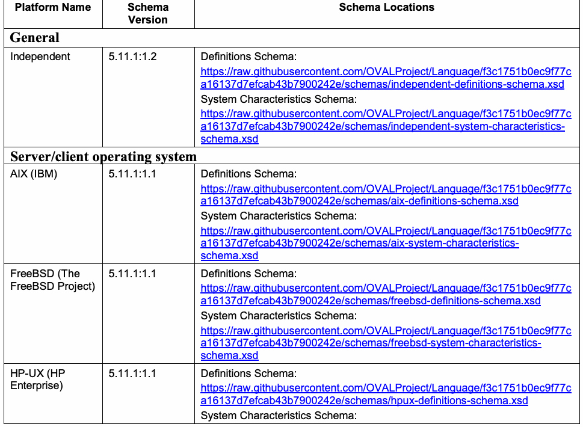
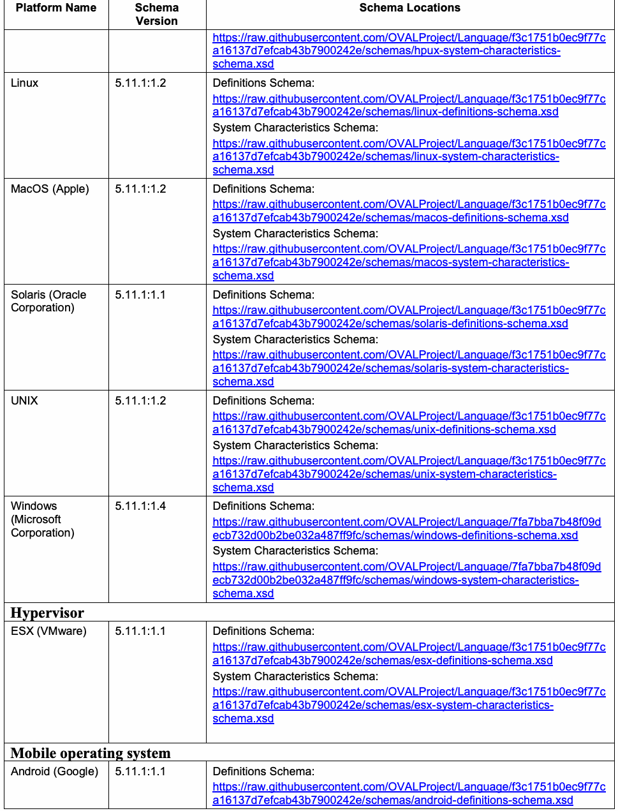
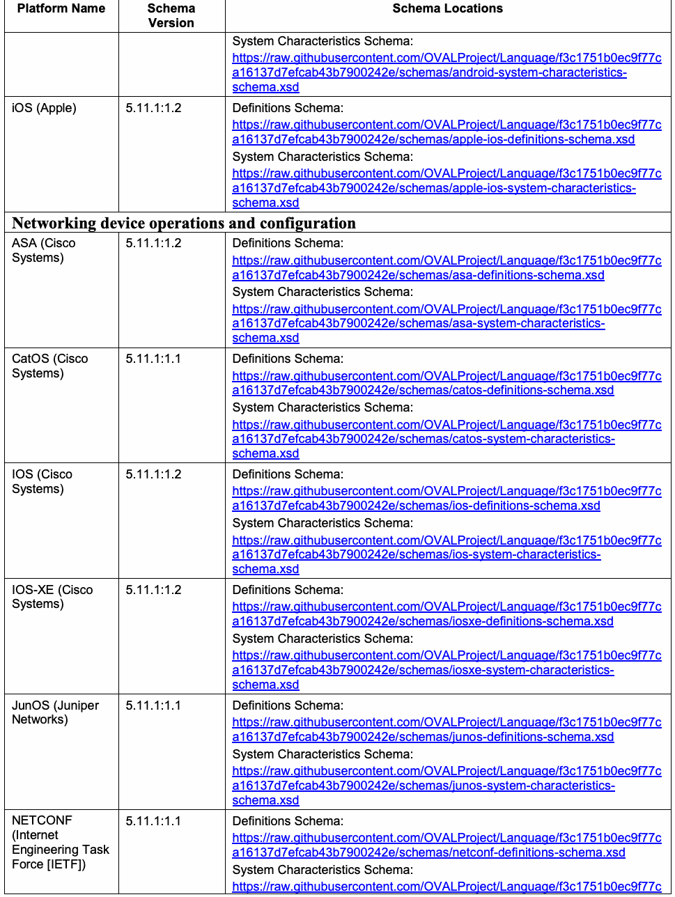
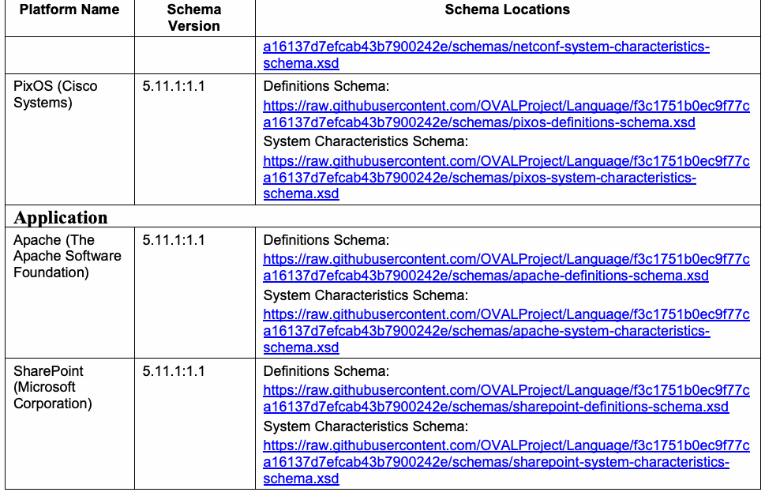

NIST Special Publication · PDF 原文抽出
SCAP 1.3 Component Specification Version Updates: An Annex to NIST Special Publication 800-126 Revision 3
SCAP 1.3コンポーネント仕様のバージョン更新：NIST SP 800-126 Rev. 3の附属書
NIST SP 800-126A（SCAP 1.3 Component Specification Version Updates: An Annex to NIST Special Publication 800-126 Revision 3）の英文と日本語訳を段落ごとに並べた閲覧用ページです。SCAP 1.3の追加機能を利用するために認められるコンポーネント仕様のマイナー更新と、OVALコアおよびプラットフォームスキーマのバージョンを示します。 翻訳は非公式です。要件の確認にはNIST の正式版 PDFを参照してください。
PDF から抽出した原文は原本との照合待ちです。
NIST Special Publication 800-126A
NIST特別刊行物800-126A
SCAP 1.3 Component Specification
SCAP 1.3コンポーネント仕様
Version Updates
バージョン更新
An Annex to NIST Special Publication 800-126 Revision 3
NIST特別刊行物800-126改訂3の附属書
Harold Booth David Waltermire Lee Badger Melanie Cook Stephen D. Quinn Karen Scarfone
Harold Booth、David Waltermire、Lee Badger、Melanie Cook、Stephen D. Quinn、Karen Scarfone
This publication is available free of charge from: https://doi.org/10.6028/NIST.SP.800-126A
本刊行物は次のURLから無料で入手できる：https://doi.org/10.6028/NIST.SP.800-126A
C O M P U T E R S E C U R I T Y
コンピュータセキュリティ

NIST Special Publication 800-126A
NIST特別刊行物800-126A
SCAP 1.3 Component Specification
SCAP 1.3コンポーネント仕様
Version Updates
バージョン更新
An Annex to NIST Special Publication 800-126 Revision 3
NIST特別刊行物800-126改訂3の附属書
Harold Booth David Waltermire Lee Badger Melanie Cook Stephen D. Quinn
Harold Booth、David Waltermire、Lee Badger、Melanie Cook、Stephen D. Quinn
Computer Security Division Information Technology Laboratory
コンピュータセキュリティ部門、情報技術研究所
Karen Scarfone Scarfone Cybersecurity Clifton, Virginia
Karen Scarfone、Scarfone Cybersecurity、バージニア州クリフトン
This publication is available free of charge from: https://doi.org/10.6028/NIST.SP.800-126A
本刊行物は次のURLから無料で入手できる：https://doi.org/10.6028/NIST.SP.800-126A
February 2018
2018年2月
U.S. Department of Commerce Wilbur L. Ross, Jr., Secretary
米国商務省 長官 Wilbur L. Ross, Jr.
National Institute of Standards and Technology
米国国立標準技術研究所
Walter Copan, NIST Director and Under Secretary of Commerce for Standards and Technology
NIST所長兼商務省標準技術担当次官 Walter Copan
Authority
権限
This publication has been developed by NIST in accordance with its statutory responsibilities under the Federal Information Security Modernization Act (FISMA) of 2014, 44 U.S.C. § 3551 et seq., Public Law (P.L.) 113-283. NIST is responsible for developing information security standards and guidelines, including minimum requirements for federal information systems, but such standards and guidelines shall not apply to national security systems without the express approval of appropriate federal officials exercising policy authority over such systems. This guideline is consistent with the requirements of the Office of Management and Budget (OMB) Circular A-130.
本刊行物は、2014年連邦情報セキュリティ近代化法（FISMA）（合衆国法典第44編第3551条以下、公法（P.L.）113-283）に基づく法定責務に従ってNISTが策定した。NISTは、連邦情報システムに対する最低要件を含め、情報セキュリティの標準およびガイドラインを策定する責任を負う。ただし、そのような標準およびガイドラインは、国家安全保障システムに対する政策権限を行使する適切な連邦当局者の明示的な承認がない限り、当該システムに適用してはならない（shall not）。本ガイドラインは、行政管理予算局（OMB）通達A-130の要件に整合している。
Nothing in this publication should be taken to contradict the standards and guidelines made mandatory and binding on federal agencies by the Secretary of Commerce under statutory authority. Nor should these guidelines be interpreted as altering or superseding the existing authorities of the Secretary of Commerce, Director of the OMB, or any other federal official. This publication may be used by nongovernmental organizations on a voluntary basis and is not subject to copyright in the United States. Attribution would, however, be appreciated by NIST.
本刊行物のいかなる記述も、法定権限に基づき商務長官が連邦機関に義務付け、拘束力を有する標準およびガイドラインと矛盾するものと解釈すべきではない（should）。また、これらのガイドラインは、商務長官、OMB長官その他の連邦当局者が有する既存の権限を変更または置き換えるものと解釈すべきではない（should）。本刊行物は非政府組織が任意に使用してよく（may）、米国内では著作権の対象ではない。ただし、NISTへの出典表示が望まれる。
National Institute of Standards and Technology Special Publication 800-126A Natl. Inst. Stand. Technol. Spec. Publ. 800-126A, 21 pages (February 2018) CODEN: NSPUE2
米国国立標準技術研究所 特別刊行物800-126A、Natl. Inst. Stand. Technol. Spec. Publ. 800-126A、21ページ（2018年2月）、CODEN: NSPUE2
This publication is available free of charge from: https://doi.org/10.6028/NIST.SP.800-126A
本刊行物は次のURLから無料で入手できる：https://doi.org/10.6028/NIST.SP.800-126A
Certain commercial entities, equipment, or materials may be identified in this document in order to describe an experimental procedure or concept adequately. Such identification is not intended to imply recommendation or endorsement by NIST, nor is it intended to imply that the entities, materials, or equipment are necessarily the best available for the purpose. There may be references in this publication to other publications currently under development by NIST in accordance with its assigned statutory responsibilities. The information in this publication, including concepts and methodologies, may be used by federal agencies even before the completion of such companion publications. Thus, until each publication is completed, current requirements, guidelines, and procedures, where they exist, remain operative. For planning and transition purposes, federal agencies may wish to closely follow the development of these new publications by NIST. Organizations are encouraged to review all draft publications during public comment periods and provide feedback to NIST. Many NIST cybersecurity publications, other than the ones noted above, are available at https://csrc.nist.gov/publications.
原本PDFの抜粋画像

実験手順または概念を適切に説明するため、この文書では特定の商業組織、装置または材料を示す場合がある（may）。そのような記載は、NISTによる推奨または是認を意味するものではなく、また当該組織、材料または装置がその目的に対して必ずしも入手可能な最良のものであることを意味するものでもない。本刊行物では、割り当てられた法定責務に従って現在NISTが策定中の他の刊行物を参照する場合がある（may）。そのような関連刊行物が完成する前であっても、連邦機関は本刊行物に記載された情報（概念および方法論を含む）を利用してよい（may）。したがって、各刊行物が完成するまでは、現行の要件、ガイドラインおよび手順が存在する場合、それらは引き続き有効である。計画および移行のため、連邦機関はNISTによるこれらの新刊行物の策定状況を注意深く確認するとよい（may）。組織には、意見募集期間中にすべてのドラフト刊行物を確認し、NISTに意見を提出することが推奨される。上記で挙げたものを除き、NISTの多くのサイバーセキュリティ刊行物はhttps://csrc.nist.gov/publicationsから入手できる。
Comments on this publication may be submitted to: National Institute of Standards and Technology Attn: Computer Security Division, Information Technology Laboratory 100 Bureau Drive (Mail Stop 8930) Gaithersburg, MD 20899-8930 Email: 800-126comments@nist.gov
本刊行物に関するコメントは次の宛先に提出してよい（may）：National Institute of Standards and Technology、Attn: Computer Security Division, Information Technology Laboratory、100 Bureau Drive (Mail Stop 8930)、Gaithersburg, MD 20899-8930、Email: 800-126comments@nist.gov
All comments are subject to release under the Freedom of Information Act (FOIA).
すべてのコメントは、情報公開法（FOIA）に基づく公開の対象となる。
Reports on Computer Systems Technology
コンピュータシステム技術に関する報告書
The Information Technology Laboratory (ITL) at the National Institute of Standards and Technology (NIST) promotes the U.S. economy and public welfare by providing technical leadership for the Nation’s measurement and standards infrastructure. ITL develops tests, test methods, reference data, proof of concept implementations, and technical analyses to advance the development and productive use of information technology. ITL’s responsibilities include the development of management, administrative, technical, and physical standards and guidelines for the cost-effective security and privacy of other than national security-related information in federal information systems. The Special Publication 800-series reports on ITL’s research, guidelines, and outreach efforts in information system security, and its collaborative activities with industry, government, and academic organizations.
米国国立標準技術研究所（NIST）の情報技術研究所（ITL）は、国の計測・標準基盤に技術的リーダーシップを提供することにより、米国経済と公共の福祉を促進する。ITLは、情報技術の発展と生産的な利用を推進するため、試験、試験方法、参照データ、概念実証の実装、および技術分析を開発する。ITLの責務には、連邦情報システムにおける国家安全保障関連以外の情報について、費用対効果の高いセキュリティとプライバシーを確保するための、経営上、管理上、技術上および物理的な標準とガイドラインの策定が含まれる。特別刊行物800シリーズは、情報システムセキュリティに関するITLの研究、ガイドライン、普及活動、および産業界、政府、学術機関との協力活動を報告する。
Abstract
概要
The Security Content Automation Protocol (SCAP) is a multi-purpose framework of component specifications that support automated configuration, vulnerability, and patch checking, security measurement, and technical control compliance activities. The SCAP version 1.3 specification is defined by the combination of NIST Special Publication (SP) 800-126 Revision 3, a set of schemas, and this document. This document allows the use of particular minor version updates to SCAP 1.3 component specifications and the use of particular Open Vulnerability and Assessment Language (OVAL) core schema and platform schema versions. Allowing use of these updates and schemas provides additional functionality for SCAP 1.3 without causing any loss of existing functionality.
セキュリティコンテンツ自動化プロトコル（SCAP）は、自動化された構成確認、脆弱性確認およびパッチ確認、セキュリティ測定、ならびに技術的管理策への準拠に関する活動を支援する、複数のコンポーネント仕様から成る多目的フレームワークである。SCAPバージョン1.3仕様は、NIST特別刊行物（SP）800-126改訂3、一連のスキーマ、および本書の組み合わせによって定義される。本書は、SCAP 1.3コンポーネント仕様に対する特定のマイナーバージョン更新の使用と、Open Vulnerability and Assessment Language（OVAL）のコアスキーマおよびプラットフォームスキーマの特定のバージョンの使用を認める。これらの更新およびスキーマの使用を認めることで、既存機能を一切損なうことなく、SCAP 1.3に追加機能が提供される。
Keywords
キーワード
Open Vulnerability and Assessment Language (OVAL); security automation; security configuration; Security Content Automation Protocol (SCAP)
Open Vulnerability and Assessment Language（OVAL）、セキュリティ自動化、セキュリティ構成、セキュリティコンテンツ自動化プロトコル（SCAP）
Acknowledgements
謝辞
The authors, Harold Booth, David Waltermire, Lee Badger, Melanie Cook, and Stephen D. Quinn of the National Institute of Standards and Technology (NIST) and Karen Scarfone of Scarfone Cybersecurity wish to thank their colleagues who reviewed drafts of this document and contributed to its technical content, particularly Stephen Banghart and Joshua Lubell of NIST, and Dragos Prisaca of G2, Inc.
著者である米国国立標準技術研究所（NIST）のHarold Booth、David Waltermire、Lee Badger、Melanie Cook、Stephen D. Quinn、およびScarfone CybersecurityのKaren Scarfoneは、本書のドラフトをレビューし技術的内容に貢献した同僚、特にNISTのStephen BanghartとJoshua Lubell、G2, Inc.のDragos Prisacaに謝意を表する。
Trademark Information
商標情報
All trademarks and registered trademarks belong to their respective organizations.
すべての商標および登録商標は、それぞれの組織に帰属する。
Errata
正誤表
This table will contain changes that have been incorporated into NIST Special Publication 800-126A after the publication is finalized. Errata updates can include corrections, clarifications, or other minor changes in the publication that are either editorial or substantive in nature.
この表には、NIST特別刊行物800-126Aの最終刊行後に反映された変更を記載する。正誤表の更新には、編集上または実質上の訂正、明確化、その他の軽微な変更が含まれることがある（can）。
| 日付 | 種類 | 変更内容 | ページ |
Table of Contents
目次
1 Introduction — 1
1 序論 — 1
1.1 Purpose and Scope — 1
1.1 目的および適用範囲 — 1
1.2 Document Structure — 2
1.2 文書の構成 — 2
2 Minor Version Updates in SCAP 1.3 Component Specifications — 3
2 SCAP 1.3 コンポーネント仕様のマイナーバージョン更新 — 3
2.1 Criteria for Potential Inclusion — 3
2.1 採用候補の基準 — 3
2.2 Approved Minor Version Updates and SCAP 1.3 Requirements — 3
2.2 承認済みマイナーバージョン更新および SCAP 1.3 要件 — 3
2.3 XML Schema and Schematron Schema Locations — 4
2.3 XML スキーマおよび Schematron スキーマの場所 — 4
3 OVAL Platform Schemas — 6
3 OVAL プラットフォームスキーマ — 6
3.1 Criteria for Potential Inclusion — 6
3.1 採用候補の基準 — 6
3.2 Approved OVAL Platform Schema Versions and SCAP 1.3 Requirements — 7
3.2 承認済み OVAL プラットフォームスキーマのバージョンおよび SCAP 1.3 要件 — 7
4 Additional Information on OVAL Data Types — 11
4 OVAL データ型に関する追加情報 — 11
5 Document Management — 12
5 文書管理 — 12
List of Appendices
付録一覧
Appendix A— Acronyms and Abbreviations — 13
付録 A— 頭字語および略語 — 13
Appendix B— Glossary — 14
付録 B— 用語集 — 14
List of Tables
表一覧
Table 1: SCAP XML Schema and Schematron Schema Locations — 4
表 1：SCAP XML スキーマおよび Schematron スキーマの場所 — 4
Table 2: Approved OVAL Platform Schema Versions — 7
表 2：承認済み OVAL プラットフォームスキーマのバージョン — 7
1 Introduction
1 序論
Specification versioning is the process of denoting a revision to a specification by changing its version number. For example, the Security Content Automation Protocol (SCAP) specification documents are updated from time to time, and these updates trigger an increase in the SCAP version number (1.0, 1.1, 1.2, etc.) What makes specification versioning challenging is that there is no standard convention or terminology for it; each specification imparts different meanings into its version numbers. For example, moving from version 3.4 to version 3.5 might break backward compatibility for one specification, add new functionality for another specification, and simply correct an error in a third specification.
仕様のバージョン管理とは、バージョン番号を変更して仕様の改訂を示すプロセスである。例えば、セキュリティコンテンツ自動化プロトコル (SCAP) の仕様文書は随時更新され、その更新に伴って SCAP のバージョン番号（1.0、1.1、1.2 など）が増加する。仕様のバージョン管理が難しいのは、これに関する標準的な規約や用語がなく、各仕様がバージョン番号に異なる意味を持たせているためである。例えば、バージョン 3.4 から 3.5 への移行は、ある仕様では後方互換性を損なう一方、別の仕様では新機能を追加し、さらに別の仕様では単に誤りを修正するだけの場合がある。
This document defines two key terms for SCAP 1.3 component specification versioning: major and minor version updates. A major version update is a revision of a specification that breaks backward compatibility with the previous revision of the specification in numerous significant ways. A minor version update is a revision of a specification that may add or enhance functionality, fix bugs, and make other changes from the previous revision, but the changes have minimal impact, if any, on backward compatibility.
本書では、SCAP 1.3 コンポーネント仕様のバージョン管理に関する2つの重要な用語、すなわちメジャーバージョン更新とマイナーバージョン更新を定義する。メジャーバージョン更新とは、仕様の前の改訂との後方互換性を多くの重要な点で損なう改訂である。マイナーバージョン更新とは、機能の追加または強化、バグ修正、その他の変更を前の改訂に加える場合がある (may) が、後方互換性への影響が最小限（または全くない）改訂である。
1.1 Purpose and Scope
1.1 目的および適用範囲
The purpose of this document is to extend the contents of NIST Special Publication (SP) 800-126 Revision 31 so that SCAP 1.3 is defined by the combination of the two documents and the set of schemas. Readers should be familiar with NIST SP 800-126 Revision 3 before reading this document.
本書の目的は、NIST 特別刊行物 (SP) 800-126 改訂 31 の内容を拡張し、両文書とスキーマ一式の組み合わせによって SCAP 1.3 が定義されるようにすることである。読者は本書を読む前に NIST SP 800-126 改訂 3 に精通していることが望ましい (should)。
This document can only be used to make minor version updates of component specifications already included in SCAP 1.3 by NIST SP 800-126 Revision 3. Major version updates to SCAP 1.3 component specifications, as well as new component specifications not included in NIST SP 800-126 Revision 3, can only be added to a future version of SCAP as documented in a future revision of NIST SP 800-126.
本書は、NIST SP 800-126 改訂 3 によって SCAP 1.3 にすでに含まれているコンポーネント仕様のマイナーバージョン更新にのみ使用できる (can)。SCAP 1.3 コンポーネント仕様のメジャーバージョン更新、および NIST SP 800-126 改訂 3 に含まれていない新しいコンポーネント仕様は、NIST SP 800-126 の将来の改訂で記載されるとおり、SCAP の将来のバージョンにのみ追加できる (can)。
Each SCAP 1.3 extension specified in this document takes one of two forms. First, it may allow the use of particular minor version updates to SCAP 1.3 component specifications, or the use of particular Open Vulnerability and Assessment Language (OVAL) platform schema versions that work in conjunction with the OVAL 5.11 core schema included in SCAP 1.3. Second, it may specify one or more requirements for using these updates or OVAL platform schemas in an SCAP 1.3-conformant manner.
本書で規定する SCAP 1.3 の各拡張は、次の2つの形式のいずれかをとる。第一に、SCAP 1.3 コンポーネント仕様の特定のマイナーバージョン更新の使用、または SCAP 1.3 に含まれる OVAL 5.11 コアスキーマと連携して機能する特定の Open Vulnerability and Assessment Language (OVAL) プラットフォームスキーマのバージョンの使用を認める場合がある (may)。第二に、これらの更新または OVAL プラットフォームスキーマを SCAP 1.3 に適合する方法で使用するための1つ以上の要件を規定する場合がある (may)。
This document specifies exactly which component specification minor version updates and OVAL platform schema versions may be used as part of SCAP 1.3 for several reasons, including the following:
本書では、SCAP 1.3 の一部として使用できる (may) コンポーネント仕様のマイナーバージョン更新および OVAL プラットフォームスキーマのバージョンを、次のような複数の理由に基づき厳密に定める。
•To support the interoperability of SCAP 1.3 tools and content
•SCAP 1.3 ツールおよびコンテンツの相互運用性を支援するため
•To provide a basis for testing tools to ensure they comply with SCAP 1.3
•SCAP 1.3 に適合していることを確認するためのツール試験の基盤を提供するため
•To reduce the burden on SCAP 1.3 tool and content developers by clearly defining all SCAP 1.3 extensions in a single place
•すべての SCAP 1.3 拡張を一か所に明確に定義し、SCAP 1.3 ツールおよびコンテンツの開発者の負担を軽減するため
While organizations are free to use SCAP 1.3 with any schema or specification that they choose in any manner they choose, such usage is not considered SCAP 1.3-conformant unless defined as such in this document or in NIST SP 800-126 Revision 3.
組織は、任意のスキーマまたは仕様を選び、任意の方法で SCAP 1.3 を自由に使用できるが、本書または NIST SP 800-126 改訂 3 でそのように定義されていない限り、その使用は SCAP 1.3 への適合とは見なされない。
The scope of this document is versioning for SCAP 1.3 component specifications only.
本書の適用範囲は、SCAP 1.3 コンポーネント仕様のバージョン管理に限られる。
1.2 Document Structure
1.2 文書の構成
The rest of this document consists of the following sections and appendices:
本書の残りの部分は、以下のセクションおよび付録で構成される。
•Section 2 presents all minor version updates in SCAP 1.3 component specifications that have been approved for inclusion in SCAP 1.3, along with any corresponding requirements to be added to SCAP 1.3. This section also lists the criteria used to evaluate a minor version update for potential inclusion in SCAP 1.3.
•セクション 2 では、SCAP 1.3 に含めることが承認された SCAP 1.3 コンポーネント仕様のすべてのマイナーバージョン更新と、SCAP 1.3 に追加する対応要件を提示する。また、マイナーバージョン更新を SCAP 1.3 への採用候補として評価するために用いる基準も列挙する。
•Section 3 specifies all OVAL platform schemas that have been approved for inclusion in SCAP 1.3, along with any corresponding requirements to be added to SCAP 1.3. This section also lists the criteria used to evaluate an OVAL platform schema for potential inclusion in SCAP 1.3.
•セクション 3 では、SCAP 1.3 に含めることが承認されたすべての OVAL プラットフォームスキーマと、SCAP 1.3 に追加する対応要件を規定する。また、OVAL プラットフォームスキーマを SCAP 1.3 への採用候補として評価するために用いる基準も列挙する。
•Section 4 is a placeholder for adding information on OVAL data types in the future.
•セクション 4 は、将来 OVAL データ型に関する情報を追加するためのプレースホルダーである。
•Section 5 describes the management processes for the document.
•セクション 5 では、本書の管理プロセスを説明する。
•Appendix A contains a list of acronyms and abbreviations used in the document.
•付録 A には、本書で使用する頭字語および略語の一覧を掲載する。
•Appendix B contains a glossary for selected terms defined in the document.
•付録 B には、本書で定義される一部の用語の用語集を掲載する。
2 Minor Version Updates in SCAP 1.3 Component Specifications
2 SCAP 1.3 コンポーネント仕様のマイナーバージョン更新
This section defines the criteria used to evaluate minor version updates in SCAP 1.3 component specifications for potential inclusion in SCAP 1.3, then lists all such updates that have been approved for inclusion in SCAP 1.3, along with any corresponding requirements added to SCAP 1.3. It also provides the current XML schema (XSD) and Schematron schema locations corresponding to all SCAP 1.3 component specifications.
本節では、SCAP 1.3 コンポーネント仕様のマイナーバージョン更新を SCAP 1.3 への採用候補として評価するために用いる基準を定義し、次に、SCAP 1.3 への採用が承認されたそのような更新のすべてを、SCAP 1.3 に追加された対応する要件があればそれとともに列挙する。また、すべての SCAP 1.3 コンポーネント仕様に対応する現行の XML スキーマ (XSD) および Schematron スキーマの場所も示す。
2.1 Criteria for Potential Inclusion
2.1 採用候補の基準
The following defines the criteria that a minor version update to an SCAP 1.3 component specification and associated requirements must meet before being considered for potential inclusion in this document:
以下に、SCAP 1.3 コンポーネント仕様のマイナーバージョン更新および関連要件が、本書への採用候補として検討される前に満たすべき基準を示す (must)。
1.One or more of the following must be true: a. The component specification is being revised strictly for bug fix or errata purposes. In other words, the update does not add new functionality or enhance existing functionality. b. The new minor version of the component specification is already being used by tools and/or content. c. The platform schema revision or component specification revision provides significant benefits, such as offering a solution for an important use case that previously had no solution.
1.以下の条件のうち1つ以上が真でなければならない (must)：a. コンポーネント仕様が、バグ修正または正誤表の目的のみに厳密に改訂されている。言い換えると、更新によって新機能が追加されたり、既存機能が強化されたりしない。b. コンポーネント仕様の新しいマイナーバージョンが、すでにツールおよび／またはコンテンツで使用されている。c. プラットフォームスキーマの改訂またはコンポーネント仕様の改訂が、これまで解決策のなかった重要なユースケースに解決策を提供するなど、大きな利点をもたらす。
2.The minor version update and associated requirements must not conflict with any existing SCAP 1.3 requirements, including minimizing any negative impact on backward compatibility.
2.マイナーバージョン更新および関連要件は、後方互換性への悪影響を最小限に抑えることを含め、既存の SCAP 1.3 要件と矛盾してはならない (must not)。
2.2 Approved Minor Version Updates and SCAP 1.3 Requirements
2.2 承認済みマイナーバージョン更新および SCAP 1.3 要件
The following SCAP 1.3 component specification minor version updates have been approved for inclusion in SCAP 1.3:
以下の SCAP 1.3 コンポーネント仕様のマイナーバージョン更新が、SCAP 1.3 への採用を承認されている。
•OVAL 5.11.22
•OVAL 5.11.22
See Table 1 for the schema location for the component specification listed above.
上記のコンポーネント仕様のスキーマの場所については、表 1 を参照。
For all other component specifications, the versions listed in NIST SP 800-126 Revision 3 are the approved versions.
その他すべてのコンポーネント仕様については、NIST SP 800-126 改訂 3 に記載されたバージョンが承認済みバージョンである。
As of this writing, no requirements need to be added to SCAP 1.3 to support the approved component specification minor version updates.
本書の執筆時点では、承認されたコンポーネント仕様のマイナーバージョン更新をサポートするために SCAP 1.3 に追加する必要のある要件はない (need)。
2.3 XML Schema and Schematron Schema Locations
2.3 XML スキーマおよび Schematron スキーマの場所
Table 1 lists the XML schema (XSD) locations (and Schematron schema locations, when applicable) for the SCAP component specifications. Table 1: SCAP XML Schema and Schematron Schema Locations
表 1 に SCAP コンポーネント仕様の XML スキーマ (XSD) の場所と、該当する場合は Schematron スキーマの場所を示す。表 1：SCAP XML スキーマおよび Schematron スキーマの場所
| Prefix | XML Schema Location | Schematron Schema Location (if applicable)3 |
| AI | https://scap.nist.gov/schema/asset-identification/1.1/asset-identification_1.1.0.xsd | |
| ARF | https://scap.nist.gov/schema/asset-reporting-format/1.1/asset-reporting-format_1.1.0.xsd | Embedded in the schema |
| CPE Applicability Language | https://scap.nist.gov/schema/cpe/2.3/cpe-language_2.3.xsd | |
| CPE Dictionary | https://scap.nist.gov/schema/cpe/2.3/cpe-dictionary_2.3.xsd | |
| CPE Dictionary Extension | https://scap.nist.gov/schema/cpe/2.3/cpe-dictionary-extension_2.3.xsd | |
| CPE Naming | https://scap.nist.gov/schema/cpe/2.3/cpe-naming_2.3.xsd | |
| OCIL | https://scap.nist.gov/schema/ocil/2.0/ocil-2.0.xsd | Embedded in the schema |
| OVAL 5.11.2 Common | https://raw.githubusercontent.com/OVALProject/Language/f3c1751b0ec9f77ca16137d7efcab43b7900242e/schemas/oval-common-schema.xsd | |
| OVAL 5.11.2 Definitions | https://raw.githubusercontent.com/OVALProject/Language/f3c1751b0ec9f77ca16137d7efcab43b7900242e/schemas/oval-definitions-schema.xsd | https://scap.nist.gov/revision/1.3/oval-schematron-rules.zip |
| OVAL 5.11.2 Directives | https://raw.githubusercontent.com/OVALProject/Language/f3c1751b0ec9f77ca16137d7efcab43b7900242e/schemas/oval-directives-schema.xsd | |
| OVAL 5.11.2 Results | https://raw.githubusercontent.com/OVALProject/Language/f3c1751b0ec9f77ca16137d7efcab43b7900242e/schemas/oval-results-schema.xsd | https://scap.nist.gov/revision/1.3/oval-schematron-rules.zip |
| OVAL 5.11.2 System Characteristics | https://raw.githubusercontent.com/OVALProject/Language/f3c1751b0ec9f77ca16137d7efcab43b7900242e/schemas/oval-system-characteristics-schema.xsd | |
| OVAL 5.11.2 Variables | https://raw.githubusercontent.com/OVALProject/Language/f3c1751b0ec9f77ca16137d7efcab43b7900242e/schemas/oval-variables-schema.xsd | |
| SCAP constructs | https://scap.nist.gov/schema/scap/1.2/scap-constructs_1.2.xsd | https://scap.nist.gov/revision/1.3/scap-schematron-rules.zip |
| SCAP source data stream | https://scap.nist.gov/schema/scap/1.3/scap-source-data-stream_1.3.xsd | |
| SWID | http://standards.iso.org/iso/19770/-2/2015-current/schema.xsd |
原本PDFの抜粋画像

| 接頭辞 | XML スキーマの場所 | Schematron スキーマの場所 (該当する場合)3 |
| AI | https://scap.nist.gov/schema/asset-identification/1.1/asset-identification_1.1.0.xsd | |
| ARF | https://scap.nist.gov/schema/asset-reporting-format/1.1/asset-reporting-format_1.1.0.xsd | スキーマ内に埋め込み |
| CPE Applicability Language | https://scap.nist.gov/schema/cpe/2.3/cpe-language_2.3.xsd | |
| CPE Dictionary | https://scap.nist.gov/schema/cpe/2.3/cpe-dictionary_2.3.xsd | |
| CPE Dictionary Extension | https://scap.nist.gov/schema/cpe/2.3/cpe-dictionary-extension_2.3.xsd | |
| CPE Naming | https://scap.nist.gov/schema/cpe/2.3/cpe-naming_2.3.xsd | |
| OCIL | https://scap.nist.gov/schema/ocil/2.0/ocil-2.0.xsd | スキーマ内に埋め込み |
| OVAL 5.11.2 Common | https://raw.githubusercontent.com/OVALProject/Language/f3c1751b0ec9f77ca16137d7efcab43b7900242e/schemas/oval-common-schema.xsd | |
| OVAL 5.11.2 Definitions | https://raw.githubusercontent.com/OVALProject/Language/f3c1751b0ec9f77ca16137d7efcab43b7900242e/schemas/oval-definitions-schema.xsd | https://scap.nist.gov/revision/1.3/oval-schematron-rules.zip |
| OVAL 5.11.2 Directives | https://raw.githubusercontent.com/OVALProject/Language/f3c1751b0ec9f77ca16137d7efcab43b7900242e/schemas/oval-directives-schema.xsd | |
| OVAL 5.11.2 Results | https://raw.githubusercontent.com/OVALProject/Language/f3c1751b0ec9f77ca16137d7efcab43b7900242e/schemas/oval-results-schema.xsd | https://scap.nist.gov/revision/1.3/oval-schematron-rules.zip |
| OVAL 5.11.2 System Characteristics | https://raw.githubusercontent.com/OVALProject/Language/f3c1751b0ec9f77ca16137d7efcab43b7900242e/schemas/oval-system-characteristics-schema.xsd | |
| OVAL 5.11.2 Variables | https://raw.githubusercontent.com/OVALProject/Language/f3c1751b0ec9f77ca16137d7efcab43b7900242e/schemas/oval-variables-schema.xsd | |
| SCAP constructs | https://scap.nist.gov/schema/scap/1.2/scap-constructs_1.2.xsd | https://scap.nist.gov/revision/1.3/scap-schematron-rules.zip |
| SCAP source data stream | https://scap.nist.gov/schema/scap/1.3/scap-source-data-stream_1.3.xsd | |
| SWID | http://standards.iso.org/iso/19770/-2/2015-current/schema.xsd |
| Prefix | XML Schema Location | Schematron Schema Location (if applicable)3 |
| TMSAD | https://scap.nist.gov/schema/tmsad/1.0/tmsad_1.0.xsd | https://scap.nist.gov/schema/tmsad/1.0/tmsad_1.0.sch |
| XCCDF | https://scap.nist.gov/schema/xccdf/1.2/xccdf_1.2.xsd (XSD 1.0, where xsd:import statements use absolute URLs), https://scap.nist.gov/schema/xccdf/1.2/xccdf_1.2.zip (complete schema bundle, where xsd:import statements use relative URLs) | https://scap.nist.gov/schema/xccdf/1.2/xccdf_1.2.sch |
原本PDFの抜粋画像

| 接頭辞 | XML スキーマの場所 | Schematron スキーマの場所 (該当する場合)3 |
| TMSAD | https://scap.nist.gov/schema/tmsad/1.0/tmsad_1.0.xsd | https://scap.nist.gov/schema/tmsad/1.0/tmsad_1.0.sch |
| XCCDF | https://scap.nist.gov/schema/xccdf/1.2/xccdf_1.2.xsd (XSD 1.0。xsd:import 文は絶対 URL を使用), https://scap.nist.gov/schema/xccdf/1.2/xccdf_1.2.zip (完全なスキーマ一式。xsd:import 文は相対 URL を使用) | https://scap.nist.gov/schema/xccdf/1.2/xccdf_1.2.sch |
3 OVAL Platform Schemas
3 OVAL プラットフォームスキーマ
OVAL version 5.11 introduced a new versioning policy that was a significant change from previous OVAL versions.4 OVAL is now divided into the Core and Platform Extension languages. The Core defines the general functionality for OVAL, while each Platform Extension defines functionality specific to a particular platform, such as an operating system or an application. The Core and Platform Extensions languages can be updated separately, which provides greater flexibility. Interoperability is supported by requiring each Platform Extension to be based on a particular version of the Core.
OVAL バージョン 5.11 では、それ以前の OVAL バージョンから大きく変更された新しいバージョン管理方針が導入された。4 現在、OVAL は Core と Platform Extension の各言語に分かれている。Core は OVAL の一般機能を定義し、各 Platform Extension はオペレーティングシステムやアプリケーションなど、特定のプラットフォームに固有の機能を定義する。Core と Platform Extension の言語は個別に更新できる (can)。これにより柔軟性が高まる。各 Platform Extension が特定バージョンの Core に基づくことを求めることで、相互運用性を支援する。
SCAP 1.3 supports the version(s) of the OVAL core schemas listed in Section 2 of this document. As a result, SCAP 1.3 could be extended to support one or more OVAL platform schemas that are based on the specified version(s) of the OVAL core schemas. Each OVAL platform schema has a composite version number; the first half corresponds to the core schema version it is based on, and the second half corresponds to the version of the platform schema itself. For example, a platform schema with version 5.11.2:1.0 would be the original version (1.0) of a platform schema based on core schema version 5.11.2. Some platform schemas used in SCAP may be based on earlier OVAL core schema versions. This works because the constructs supported in older OVAL core schema versions are expected to be supported in newer 5.x releases.
SCAP 1.3 は、本書のセクション 2 に記載されている OVAL コアスキーマのバージョンをサポートする。その結果、指定された OVAL コアスキーマのバージョンに基づく1つ以上の OVAL プラットフォームスキーマをサポートするよう SCAP 1.3 を拡張できる可能性がある (could)。各 OVAL プラットフォームスキーマは複合バージョン番号を持つ。前半は基盤となるコアスキーマのバージョンに対応し、後半はプラットフォームスキーマ自体のバージョンに対応する。例えば、バージョン 5.11.2:1.0 のプラットフォームスキーマは、コアスキーマのバージョン 5.11.2 に基づくプラットフォームスキーマの初版 (1.0) となる (would)。SCAP で使用される一部のプラットフォームスキーマは、それ以前の OVAL コアスキーマのバージョンに基づいている場合がある (may)。これは、それ以前の OVAL コアスキーマのバージョンでサポートされる構成要素が、新しい 5.x リリースでもサポートされると期待されるためである。
This section defines the criteria used to evaluate OVAL platform schema versions that work in conjunction with SCAP 1.3-conformant OVAL core schemas for potential inclusion in SCAP 1.3. It then lists all OVAL platform schema versions that have been approved for inclusion in SCAP 1.3, along with any corresponding requirements added to SCAP 1.3.
本節では、SCAP 1.3 に適合する OVAL コアスキーマと連携して動作する OVAL プラットフォームスキーマのバージョンを、SCAP 1.3 への採用候補として評価するために用いる基準を定義する。続いて、SCAP 1.3 への採用が承認されたすべての OVAL プラットフォームスキーマのバージョンを、SCAP 1.3 に追加された対応する要件があればそれとともに列挙する。
3.1 Criteria for Potential Inclusion
3.1 採用候補の基準
The following defines the criteria that an OVAL platform schema version and associated requirements must meet before being considered for potential inclusion in this document:
以下に、OVAL プラットフォームスキーマのバージョンおよび関連要件が、本書への採用候補として検討される前に満たすべき基準を示す (must)。
1.The OVAL platform schema version must correspond to an SCAP 1.3-conformant OVAL core schema version.
1.OVAL プラットフォームスキーマのバージョンは、SCAP 1.3 に適合する OVAL コアスキーマのバージョンに対応しなければならない (must)。
2.The OVAL platform schema version and associated requirements must not conflict with any existing SCAP 1.3 requirements. This includes preserving full backward compatibility.
2.OVAL プラットフォームスキーマのバージョンおよび関連要件は、既存の SCAP 1.3 要件と矛盾してはならない (must not)。これには、完全な後方互換性を維持することが含まれる。
3.One or more of the following must be true: a. One or more platform vendors are already making significant use of the platform schema version. b. One or more tool vendors are already making significant use of the platform schema version. c. Operational organizations that are using SCAP 1.3-conformant tools to consume SCAP 1.3-conformant content are already making significant use of the platform schema version.
3.以下の条件のうち1つ以上が真でなければならない (must)：a. 1つ以上のプラットフォームベンダーが、すでに当該プラットフォームスキーマのバージョンを相当程度利用している。b. 1つ以上のツールベンダーが、すでに当該プラットフォームスキーマのバージョンを相当程度利用している。c. SCAP 1.3 に適合するツールを用いて SCAP 1.3 に適合するコンテンツを利用している運用組織が、すでに当該プラットフォームスキーマのバージョンを相当程度利用している。
d. The platform schema version provides significant benefits, such as offering a solution for an important use case that previously had no solution. e. SCAP content is available that makes significant use of the platform schema version. f. The OVAL Board has demonstrated that there are significant benefits to using the platform schema version in conjunction with the SCAP 1.3 component specifications.
d. プラットフォームスキーマのバージョンが、これまで解決策のなかった重要なユースケースに解決策を提供するなど、大きな利点をもたらす。e. 当該プラットフォームスキーマのバージョンを相当程度利用する SCAP コンテンツが利用可能である。f. OVAL Board が、SCAP 1.3 コンポーネント仕様と組み合わせて当該プラットフォームスキーマのバージョンを使用することに大きな利点があることを実証している。
3.2 Approved OVAL Platform Schema Versions and SCAP 1.3 Requirements
3.2 承認済み OVAL プラットフォームスキーマのバージョンおよび SCAP 1.3 要件
Table 2 lists the OVAL platform schema versions5 that have been approved for inclusion in SCAP 1.3. Note that it is not expected nor desired that all SCAP 1.3-conformant tools will implement all of these OVAL platform schema versions. Table 2 indicates which OVAL platform schema versions are in scope for SCAP 1.3. SCAP 1.3-conformant tools should only implement the ones that are relevant for the purposes of each tool.
表 2 に、SCAP 1.3 への採用が承認された OVAL プラットフォームスキーマのバージョン5を示す。すべての SCAP 1.3 適合ツールが、これらすべての OVAL プラットフォームスキーマのバージョンを実装すること (will) は期待も望まれてもいない点に注意すること。表 2 は、SCAP 1.3 の対象となる OVAL プラットフォームスキーマのバージョンを示す。SCAP 1.3 適合ツールは、それぞれのツールの目的に関連するもののみを実装することが望ましい (should)。
Table 2: Approved OVAL Platform Schema Versions
表 2：承認済み OVAL プラットフォームスキーマのバージョン
| Platform Name | Schema Version | Schema Locations |
| General | ||
| Independent | 5.11.1:1.2 | Definitions Schema: https://raw.githubusercontent.com/OVALProject/Language/f3c1751b0ec9f77ca16137d7efcab43b7900242e/schemas/independent-definitions-schema.xsd System Characteristics Schema: https://raw.githubusercontent.com/OVALProject/Language/f3c1751b0ec9f77ca16137d7efcab43b7900242e/schemas/independent-system-characteristics-schema.xsd |
| Server/client operating system | ||
| AIX (IBM) | 5.11.1:1.1 | Definitions Schema: https://raw.githubusercontent.com/OVALProject/Language/f3c1751b0ec9f77ca16137d7efcab43b7900242e/schemas/aix-definitions-schema.xsd System Characteristics Schema: https://raw.githubusercontent.com/OVALProject/Language/f3c1751b0ec9f77ca16137d7efcab43b7900242e/schemas/aix-system-characteristics-schema.xsd |
| FreeBSD (The FreeBSD Project) | 5.11.1:1.1 | Definitions Schema: https://raw.githubusercontent.com/OVALProject/Language/f3c1751b0ec9f77ca16137d7efcab43b7900242e/schemas/freebsd-definitions-schema.xsd System Characteristics Schema: https://raw.githubusercontent.com/OVALProject/Language/f3c1751b0ec9f77ca16137d7efcab43b7900242e/schemas/freebsd-system-characteristics-schema.xsd |
| HP-UX (HP Enterprise) | 5.11.1:1.1 | Definitions Schema: https://raw.githubusercontent.com/OVALProject/Language/f3c1751b0ec9f77ca16137d7efcab43b7900242e/schemas/hpux-definitions-schema.xsd System Characteristics Schema: https://raw.githubusercontent.com/OVALProject/Language/f3c1751b0ec9f77ca16137d7efcab43b7900242e/schemas/hpux-system-characteristics-schema.xsd |
原本PDFの抜粋画像

| プラットフォーム名 | スキーマのバージョン | スキーマの場所 |
| 一般 | ||
| Independent | 5.11.1:1.2 | 定義スキーマ： https://raw.githubusercontent.com/OVALProject/Language/f3c1751b0ec9f77ca16137d7efcab43b7900242e/schemas/independent-definitions-schema.xsd システム特性スキーマ： https://raw.githubusercontent.com/OVALProject/Language/f3c1751b0ec9f77ca16137d7efcab43b7900242e/schemas/independent-system-characteristics-schema.xsd |
| サーバー／クライアントオペレーティングシステム | ||
| AIX (IBM) | 5.11.1:1.1 | 定義スキーマ： https://raw.githubusercontent.com/OVALProject/Language/f3c1751b0ec9f77ca16137d7efcab43b7900242e/schemas/aix-definitions-schema.xsd システム特性スキーマ： https://raw.githubusercontent.com/OVALProject/Language/f3c1751b0ec9f77ca16137d7efcab43b7900242e/schemas/aix-system-characteristics-schema.xsd |
| FreeBSD (The FreeBSD Project) | 5.11.1:1.1 | 定義スキーマ： https://raw.githubusercontent.com/OVALProject/Language/f3c1751b0ec9f77ca16137d7efcab43b7900242e/schemas/freebsd-definitions-schema.xsd システム特性スキーマ： https://raw.githubusercontent.com/OVALProject/Language/f3c1751b0ec9f77ca16137d7efcab43b7900242e/schemas/freebsd-system-characteristics-schema.xsd |
| HP-UX (HP Enterprise) | 5.11.1:1.1 | 定義スキーマ： https://raw.githubusercontent.com/OVALProject/Language/f3c1751b0ec9f77ca16137d7efcab43b7900242e/schemas/hpux-definitions-schema.xsd システム特性スキーマ： https://raw.githubusercontent.com/OVALProject/Language/f3c1751b0ec9f77ca16137d7efcab43b7900242e/schemas/hpux-system-characteristics-schema.xsd |
| Platform Name | Schema Version | Schema Locations |
| Linux | 5.11.1:1.2 | Definitions Schema: https://raw.githubusercontent.com/OVALProject/Language/f3c1751b0ec9f77ca16137d7efcab43b7900242e/schemas/linux-definitions-schema.xsd System Characteristics Schema: https://raw.githubusercontent.com/OVALProject/Language/f3c1751b0ec9f77ca16137d7efcab43b7900242e/schemas/linux-system-characteristics-schema.xsd |
| MacOS (Apple) | 5.11.1:1.2 | Definitions Schema: https://raw.githubusercontent.com/OVALProject/Language/f3c1751b0ec9f77ca16137d7efcab43b7900242e/schemas/macos-definitions-schema.xsd System Characteristics Schema: https://raw.githubusercontent.com/OVALProject/Language/f3c1751b0ec9f77ca16137d7efcab43b7900242e/schemas/macos-system-characteristics-schema.xsd |
| Solaris (Oracle Corporation) | 5.11.1:1.1 | Definitions Schema: https://raw.githubusercontent.com/OVALProject/Language/f3c1751b0ec9f77ca16137d7efcab43b7900242e/schemas/solaris-definitions-schema.xsd System Characteristics Schema: https://raw.githubusercontent.com/OVALProject/Language/f3c1751b0ec9f77ca16137d7efcab43b7900242e/schemas/solaris-system-characteristics-schema.xsd |
| UNIX | 5.11.1:1.2 | Definitions Schema: https://raw.githubusercontent.com/OVALProject/Language/f3c1751b0ec9f77ca16137d7efcab43b7900242e/schemas/unix-definitions-schema.xsd System Characteristics Schema: https://raw.githubusercontent.com/OVALProject/Language/f3c1751b0ec9f77ca16137d7efcab43b7900242e/schemas/unix-system-characteristics-schema.xsd |
| Windows (Microsoft Corporation) | 5.11.1:1.4 | Definitions Schema: https://raw.githubusercontent.com/OVALProject/Language/7fa7bba7b48f09decb732d00b2be032a487ff9fc/schemas/windows-definitions-schema.xsd System Characteristics Schema: https://raw.githubusercontent.com/OVALProject/Language/7fa7bba7b48f09decb732d00b2be032a487ff9fc/schemas/windows-system-characteristics-schema.xsd |
| Hypervisor | ||
| ESX (VMware) | 5.11.1:1.1 | Definitions Schema: https://raw.githubusercontent.com/OVALProject/Language/f3c1751b0ec9f77ca16137d7efcab43b7900242e/schemas/esx-definitions-schema.xsd System Characteristics Schema: https://raw.githubusercontent.com/OVALProject/Language/f3c1751b0ec9f77ca16137d7efcab43b7900242e/schemas/esx-system-characteristics-schema.xsd |
| Mobile operating system | ||
| Android (Google) | 5.11.1:1.1 | Definitions Schema: https://raw.githubusercontent.com/OVALProject/Language/f3c1751b0ec9f77ca16137d7efcab43b7900242e/schemas/android-definitions-schema.xsd System Characteristics Schema: https://raw.githubusercontent.com/OVALProject/Language/f3c1751b0ec9f77ca16137d7efcab43b7900242e/schemas/android-system-characteristics-schema.xsd |
原本PDFの抜粋画像

| プラットフォーム名 | スキーマのバージョン | スキーマの場所 |
| Linux | 5.11.1:1.2 | 定義スキーマ： https://raw.githubusercontent.com/OVALProject/Language/f3c1751b0ec9f77ca16137d7efcab43b7900242e/schemas/linux-definitions-schema.xsd システム特性スキーマ： https://raw.githubusercontent.com/OVALProject/Language/f3c1751b0ec9f77ca16137d7efcab43b7900242e/schemas/linux-system-characteristics-schema.xsd |
| MacOS (Apple) | 5.11.1:1.2 | 定義スキーマ： https://raw.githubusercontent.com/OVALProject/Language/f3c1751b0ec9f77ca16137d7efcab43b7900242e/schemas/macos-definitions-schema.xsd システム特性スキーマ： https://raw.githubusercontent.com/OVALProject/Language/f3c1751b0ec9f77ca16137d7efcab43b7900242e/schemas/macos-system-characteristics-schema.xsd |
| Solaris (Oracle Corporation) | 5.11.1:1.1 | 定義スキーマ： https://raw.githubusercontent.com/OVALProject/Language/f3c1751b0ec9f77ca16137d7efcab43b7900242e/schemas/solaris-definitions-schema.xsd システム特性スキーマ： https://raw.githubusercontent.com/OVALProject/Language/f3c1751b0ec9f77ca16137d7efcab43b7900242e/schemas/solaris-system-characteristics-schema.xsd |
| UNIX | 5.11.1:1.2 | 定義スキーマ： https://raw.githubusercontent.com/OVALProject/Language/f3c1751b0ec9f77ca16137d7efcab43b7900242e/schemas/unix-definitions-schema.xsd システム特性スキーマ： https://raw.githubusercontent.com/OVALProject/Language/f3c1751b0ec9f77ca16137d7efcab43b7900242e/schemas/unix-system-characteristics-schema.xsd |
| Windows (Microsoft Corporation) | 5.11.1:1.4 | 定義スキーマ： https://raw.githubusercontent.com/OVALProject/Language/7fa7bba7b48f09decb732d00b2be032a487ff9fc/schemas/windows-definitions-schema.xsd システム特性スキーマ： https://raw.githubusercontent.com/OVALProject/Language/7fa7bba7b48f09decb732d00b2be032a487ff9fc/schemas/windows-system-characteristics-schema.xsd |
| ハイパーバイザー | ||
| ESX (VMware) | 5.11.1:1.1 | 定義スキーマ： https://raw.githubusercontent.com/OVALProject/Language/f3c1751b0ec9f77ca16137d7efcab43b7900242e/schemas/esx-definitions-schema.xsd システム特性スキーマ： https://raw.githubusercontent.com/OVALProject/Language/f3c1751b0ec9f77ca16137d7efcab43b7900242e/schemas/esx-system-characteristics-schema.xsd |
| モバイルオペレーティングシステム | ||
| Android (Google) | 5.11.1:1.1 | 定義スキーマ： https://raw.githubusercontent.com/OVALProject/Language/f3c1751b0ec9f77ca16137d7efcab43b7900242e/schemas/android-definitions-schema.xsd システム特性スキーマ： https://raw.githubusercontent.com/OVALProject/Language/f3c1751b0ec9f77ca16137d7efcab43b7900242e/schemas/android-system-characteristics-schema.xsd |
| Platform Name | Schema Version | Schema Locations |
| iOS (Apple) | 5.11.1:1.2 | Definitions Schema: https://raw.githubusercontent.com/OVALProject/Language/f3c1751b0ec9f77ca16137d7efcab43b7900242e/schemas/apple-ios-definitions-schema.xsd System Characteristics Schema: https://raw.githubusercontent.com/OVALProject/Language/f3c1751b0ec9f77ca16137d7efcab43b7900242e/schemas/apple-ios-system-characteristics-schema.xsd |
| Networking device operations and configuration | ||
| ASA (Cisco Systems) | 5.11.1:1.2 | Definitions Schema: https://raw.githubusercontent.com/OVALProject/Language/f3c1751b0ec9f77ca16137d7efcab43b7900242e/schemas/asa-definitions-schema.xsd System Characteristics Schema: https://raw.githubusercontent.com/OVALProject/Language/f3c1751b0ec9f77ca16137d7efcab43b7900242e/schemas/asa-system-characteristics-schema.xsd |
| CatOS (Cisco Systems) | 5.11.1:1.1 | Definitions Schema: https://raw.githubusercontent.com/OVALProject/Language/f3c1751b0ec9f77ca16137d7efcab43b7900242e/schemas/catos-definitions-schema.xsd System Characteristics Schema: https://raw.githubusercontent.com/OVALProject/Language/f3c1751b0ec9f77ca16137d7efcab43b7900242e/schemas/catos-system-characteristics-schema.xsd |
| IOS (Cisco Systems) | 5.11.1:1.2 | Definitions Schema: https://raw.githubusercontent.com/OVALProject/Language/f3c1751b0ec9f77ca16137d7efcab43b7900242e/schemas/ios-definitions-schema.xsd System Characteristics Schema: https://raw.githubusercontent.com/OVALProject/Language/f3c1751b0ec9f77ca16137d7efcab43b7900242e/schemas/ios-system-characteristics-schema.xsd |
| IOS-XE (Cisco Systems) | 5.11.1:1.2 | Definitions Schema: https://raw.githubusercontent.com/OVALProject/Language/f3c1751b0ec9f77ca16137d7efcab43b7900242e/schemas/iosxe-definitions-schema.xsd System Characteristics Schema: https://raw.githubusercontent.com/OVALProject/Language/f3c1751b0ec9f77ca16137d7efcab43b7900242e/schemas/iosxe-system-characteristics-schema.xsd |
| JunOS (Juniper Networks) | 5.11.1:1.1 | Definitions Schema: https://raw.githubusercontent.com/OVALProject/Language/f3c1751b0ec9f77ca16137d7efcab43b7900242e/schemas/junos-definitions-schema.xsd System Characteristics Schema: https://raw.githubusercontent.com/OVALProject/Language/f3c1751b0ec9f77ca16137d7efcab43b7900242e/schemas/junos-system-characteristics-schema.xsd |
| NETCONF (Internet Engineering Task Force [IETF]) | 5.11.1:1.1 | Definitions Schema: https://raw.githubusercontent.com/OVALProject/Language/f3c1751b0ec9f77ca16137d7efcab43b7900242e/schemas/netconf-definitions-schema.xsd System Characteristics Schema: https://raw.githubusercontent.com/OVALProject/Language/f3c1751b0ec9f77ca16137d7efcab43b7900242e/schemas/netconf-system-characteristics-schema.xsd |
原本PDFの抜粋画像

| プラットフォーム名 | スキーマのバージョン | スキーマの場所 |
| iOS (Apple) | 5.11.1:1.2 | 定義スキーマ： https://raw.githubusercontent.com/OVALProject/Language/f3c1751b0ec9f77ca16137d7efcab43b7900242e/schemas/apple-ios-definitions-schema.xsd システム特性スキーマ： https://raw.githubusercontent.com/OVALProject/Language/f3c1751b0ec9f77ca16137d7efcab43b7900242e/schemas/apple-ios-system-characteristics-schema.xsd |
| ネットワーク機器の操作および構成 | ||
| ASA (Cisco Systems) | 5.11.1:1.2 | 定義スキーマ： https://raw.githubusercontent.com/OVALProject/Language/f3c1751b0ec9f77ca16137d7efcab43b7900242e/schemas/asa-definitions-schema.xsd システム特性スキーマ： https://raw.githubusercontent.com/OVALProject/Language/f3c1751b0ec9f77ca16137d7efcab43b7900242e/schemas/asa-system-characteristics-schema.xsd |
| CatOS (Cisco Systems) | 5.11.1:1.1 | 定義スキーマ： https://raw.githubusercontent.com/OVALProject/Language/f3c1751b0ec9f77ca16137d7efcab43b7900242e/schemas/catos-definitions-schema.xsd システム特性スキーマ： https://raw.githubusercontent.com/OVALProject/Language/f3c1751b0ec9f77ca16137d7efcab43b7900242e/schemas/catos-system-characteristics-schema.xsd |
| IOS (Cisco Systems) | 5.11.1:1.2 | 定義スキーマ： https://raw.githubusercontent.com/OVALProject/Language/f3c1751b0ec9f77ca16137d7efcab43b7900242e/schemas/ios-definitions-schema.xsd システム特性スキーマ： https://raw.githubusercontent.com/OVALProject/Language/f3c1751b0ec9f77ca16137d7efcab43b7900242e/schemas/ios-system-characteristics-schema.xsd |
| IOS-XE (Cisco Systems) | 5.11.1:1.2 | 定義スキーマ： https://raw.githubusercontent.com/OVALProject/Language/f3c1751b0ec9f77ca16137d7efcab43b7900242e/schemas/iosxe-definitions-schema.xsd システム特性スキーマ： https://raw.githubusercontent.com/OVALProject/Language/f3c1751b0ec9f77ca16137d7efcab43b7900242e/schemas/iosxe-system-characteristics-schema.xsd |
| JunOS (Juniper Networks) | 5.11.1:1.1 | 定義スキーマ： https://raw.githubusercontent.com/OVALProject/Language/f3c1751b0ec9f77ca16137d7efcab43b7900242e/schemas/junos-definitions-schema.xsd システム特性スキーマ： https://raw.githubusercontent.com/OVALProject/Language/f3c1751b0ec9f77ca16137d7efcab43b7900242e/schemas/junos-system-characteristics-schema.xsd |
| NETCONF (Internet Engineering Task Force [IETF]) | 5.11.1:1.1 | 定義スキーマ： https://raw.githubusercontent.com/OVALProject/Language/f3c1751b0ec9f77ca16137d7efcab43b7900242e/schemas/netconf-definitions-schema.xsd システム特性スキーマ： https://raw.githubusercontent.com/OVALProject/Language/f3c1751b0ec9f77ca16137d7efcab43b7900242e/schemas/netconf-system-characteristics-schema.xsd |
| Platform Name | Schema Version | Schema Locations |
| PixOS (Cisco Systems) | 5.11.1:1.1 | Definitions Schema: https://raw.githubusercontent.com/OVALProject/Language/f3c1751b0ec9f77ca16137d7efcab43b7900242e/schemas/pixos-definitions-schema.xsd System Characteristics Schema: https://raw.githubusercontent.com/OVALProject/Language/f3c1751b0ec9f77ca16137d7efcab43b7900242e/schemas/pixos-system-characteristics-schema.xsd |
| Application | ||
| Apache (The Apache Software Foundation) | 5.11.1:1.1 | Definitions Schema: https://raw.githubusercontent.com/OVALProject/Language/f3c1751b0ec9f77ca16137d7efcab43b7900242e/schemas/apache-definitions-schema.xsd System Characteristics Schema: https://raw.githubusercontent.com/OVALProject/Language/f3c1751b0ec9f77ca16137d7efcab43b7900242e/schemas/apache-system-characteristics-schema.xsd |
| SharePoint (Microsoft Corporation) | 5.11.1:1.1 | Definitions Schema: https://raw.githubusercontent.com/OVALProject/Language/f3c1751b0ec9f77ca16137d7efcab43b7900242e/schemas/sharepoint-definitions-schema.xsd System Characteristics Schema: https://raw.githubusercontent.com/OVALProject/Language/f3c1751b0ec9f77ca16137d7efcab43b7900242e/schemas/sharepoint-system-characteristics-schema.xsd |
原本PDFの抜粋画像

| プラットフォーム名 | スキーマのバージョン | スキーマの場所 |
| PixOS (Cisco Systems) | 5.11.1:1.1 | 定義スキーマ： https://raw.githubusercontent.com/OVALProject/Language/f3c1751b0ec9f77ca16137d7efcab43b7900242e/schemas/pixos-definitions-schema.xsd システム特性スキーマ： https://raw.githubusercontent.com/OVALProject/Language/f3c1751b0ec9f77ca16137d7efcab43b7900242e/schemas/pixos-system-characteristics-schema.xsd |
| アプリケーション | ||
| Apache (The Apache Software Foundation) | 5.11.1:1.1 | 定義スキーマ： https://raw.githubusercontent.com/OVALProject/Language/f3c1751b0ec9f77ca16137d7efcab43b7900242e/schemas/apache-definitions-schema.xsd システム特性スキーマ： https://raw.githubusercontent.com/OVALProject/Language/f3c1751b0ec9f77ca16137d7efcab43b7900242e/schemas/apache-system-characteristics-schema.xsd |
| SharePoint (Microsoft Corporation) | 5.11.1:1.1 | 定義スキーマ： https://raw.githubusercontent.com/OVALProject/Language/f3c1751b0ec9f77ca16137d7efcab43b7900242e/schemas/sharepoint-definitions-schema.xsd システム特性スキーマ： https://raw.githubusercontent.com/OVALProject/Language/f3c1751b0ec9f77ca16137d7efcab43b7900242e/schemas/sharepoint-system-characteristics-schema.xsd |
As of this writing, no requirements need to be added to SCAP 1.3 to support the approved OVAL platform schema versions.
本書の執筆時点では、承認済み OVAL プラットフォームスキーマのバージョンをサポートするために SCAP 1.3 に追加する必要のある要件はない (need)。
4 Additional Information on OVAL Data Types
4 OVAL データ型に関する追加情報
This section is reserved for future use in providing additional information on OVAL data types. As of this writing, no additional data types have yet been defined.
本節は、将来 OVAL データ型に関する追加情報を提供するために留保されている。本書の執筆時点では、追加のデータ型はまだ定義されていない。
5 Document Management
5 文書管理
As explained in Section 1, the combination of this document, NIST SP 800-126 Revision 3, and the set of schemas defines the SCAP 1.3 specification. Having two documents allows SCAP 1.3 extensions to be defined in a separate document without having to update and re-release NIST SP 800-126 Revision 3 itself each time. It is also more convenient for SCAP tool and content developers to have a separate document that lists only the extensions. The adoption of extensions will be driven by community needs and feedback, major changes to platforms, and other trends and events.
セクション 1 で説明したとおり、本書、NIST SP 800-126 改訂 3、およびスキーマ一式の組み合わせによって SCAP 1.3 仕様が定義される。文書を2つに分けることで、SCAP 1.3 の拡張を別文書で定義でき、その都度 NIST SP 800-126 改訂 3 自体を更新して再発行する必要がなくなる。また、拡張のみを列挙した別文書がある方が、SCAP ツールおよびコンテンツの開発者にとっても便利である。拡張の採用は、コミュニティのニーズとフィードバック、プラットフォームの大幅な変更、その他の傾向や事象に応じて進められることになる。
It is reasonable to expect that this document will be updated more often than NIST SP 800-126 Revision 3, but frequent updates to either document are not anticipated. Each update to either document may necessitate corresponding changes to NIST IR 7511, which defines the SCAP Validation Program derived test requirements (DTR). It is expected that revisions to NIST IR 7511 will cite the specific version of this document from which the test requirements are derived.
本書は NIST SP 800-126 改訂 3 よりも頻繁に更新されると見込むのが妥当であるが、いずれの文書についても頻繁な更新は想定されていない。いずれかの文書が更新されるたびに、SCAP 検証プログラムの派生テスト要件 (DTR) を定義する NIST IR 7511 に対応する変更が必要になる場合がある。NIST IR 7511 の改訂では、テスト要件の導出元である本書の特定のバージョンが引用される見込みである。
Appendix A—Acronyms and Abbreviations
付録 A—頭字語および略語
Selected acronyms and abbreviations used in this document are defined below.
本書で使用する主な頭字語および略語を以下に定義する。
| DTR | Derived Test Requirements |
| FOIA | Freedom of Information Act |
| IETF | Internet Engineering Task Force |
| IR | Internal Report |
| ITL | Information Technology Laboratory |
| NIST | National Institute of Standards and Technology |
| OVAL | Open Vulnerability and Assessment Language |
| SCAP | Security Content Automation Protocol |
| SP | Special Publication |
| DTR | 派生テスト要件 (Derived Test Requirements) |
| FOIA | 情報公開法 (Freedom of Information Act) |
| IETF | インターネット技術特別調査委員会 (Internet Engineering Task Force) |
| IR | 内部報告書 (Internal Report) |
| ITL | 情報技術研究所 (Information Technology Laboratory) |
| NIST | 国立標準技術研究所 (National Institute of Standards and Technology) |
| OVAL | オープン脆弱性評価言語 (Open Vulnerability and Assessment Language) |
| SCAP | セキュリティコンテンツ自動化プロトコル (Security Content Automation Protocol) |
| SP | 特別刊行物 (Special Publication) |
Appendix B—Glossary
付録 B—用語集
Selected terms used in this document are defined below. See the glossary appendix in NIST SP 800-126 Revision 3 for additional definitions.
本書で使用する主な用語を以下に定義する。追加の定義については、NIST SP 800-126 改訂 3 の用語集の付録を参照。
| Major version update | A revision of a specification that breaks backward compatibility with the previous revision of the specification in numerous significant ways. |
| Minor version update | A revision of a specification that may add or enhance functionality, fix bugs, and make other changes from the previous revision, but the changes have minimal impact, if any, on backward compatibility. |
| Specification versioning | The process of denoting a revision to a specification by changing its version number. |
| メジャーバージョン更新 | 仕様の以前の改訂との後方互換性を多くの重要な点で損なう仕様の改訂。 |
| マイナーバージョン更新 | 以前の改訂に対して機能の追加または強化、バグの修正、その他の変更を行うことがあるが、それらの変更が後方互換性に及ぼす影響は、あるとしても最小限である仕様の改訂。 |
| 仕様のバージョン管理 | バージョン番号を変更することによって仕様の改訂を示すプロセス。 |